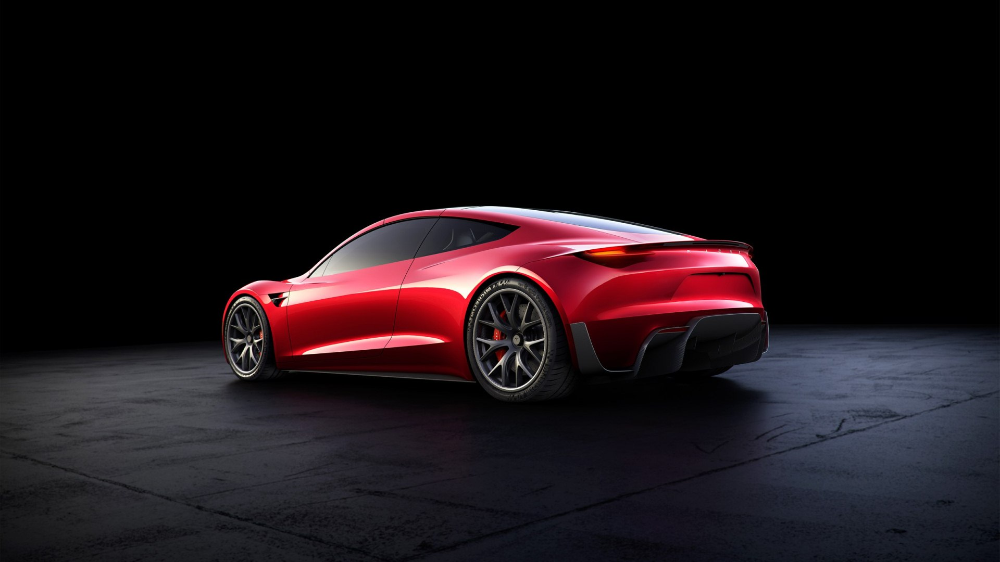
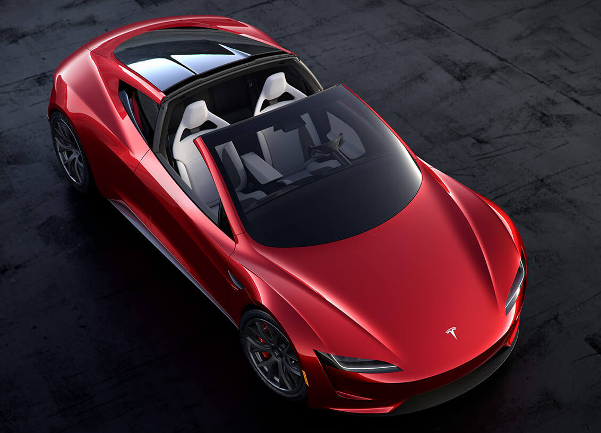
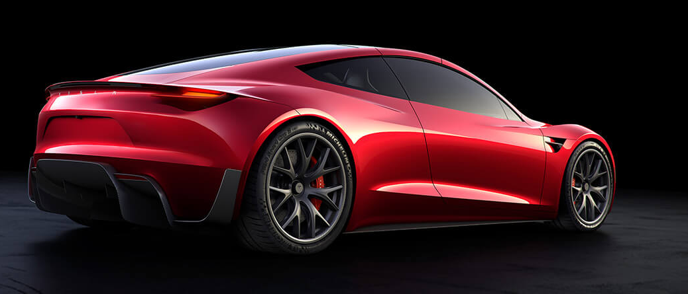

ROADSTER


Techo de cristal
Su techo de cristal ligero y removible se guarda en la cajuela; así la experiencia de conducción es la de un convertible: al aire libre.
Se diseñó en función del desempeño y la aeroeficiencia
El Roadster es un superauto, totalmente eléctrico, que maximiza el potencial de la ingeniería aerodinámica—con un desempeño y eficiencia que fijan un nuevo récord.

ESPECIFICACIONES TECNICAS